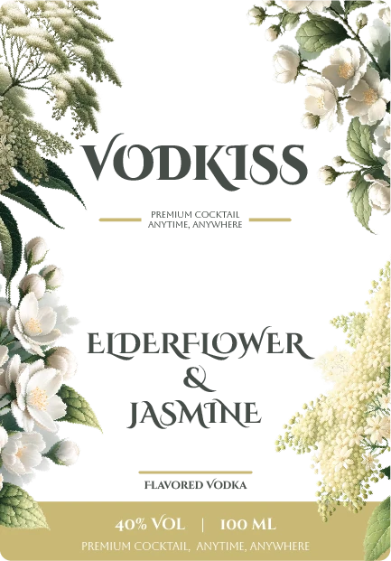
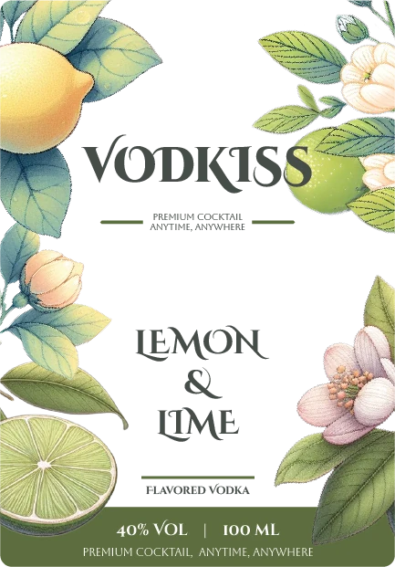
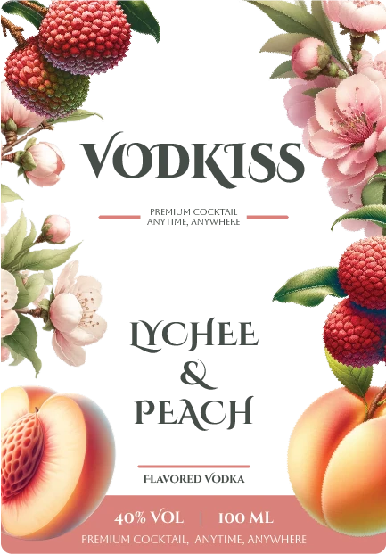
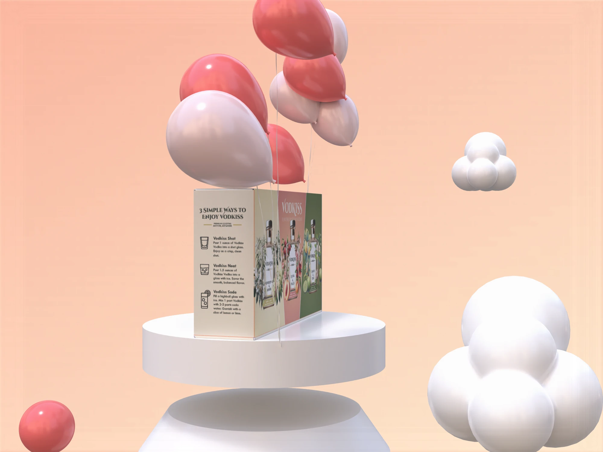
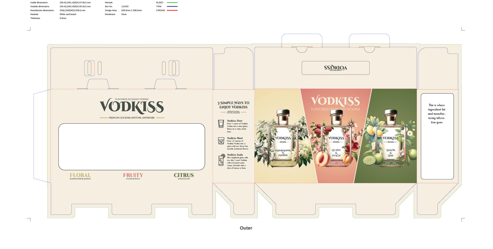

Identity & packaging / 2024–2025
A little occasion.

01 / The brief
A considered small formatA small bottle.
A full sense
of flavour.
The original brief imagined a three-bottle set that makes flavoured vodka easy to recognise and simple to enjoy.
The design brings botanical illustration, expressive lettering and a warm paper palette to a compact format. Flavour names stay at the centre, while each label offers its own visual atmosphere.
02 / Bilingual identity
The original marksAn expressive name.
A gentle embrace.
Original 2024 identity artwork, reproduced unchanged. Product-origin wording is part of the archived artwork, not independently verified provenance.
Brand center / original logo, full palette, typography & source guide ↗
03 / Colour & typography
Botanical characterA palette
you can almost
taste.
The source system uses a dark green anchor with floral gold, citrus green and a soft fruit pink. Decorative lettering gives the name character; simpler companion type keeps the label legible.
Green#464D48
Gold#C9B875
Green#5C6E3F
Pink#D8817A
Teal#708D8D
Decorative
Cinzel Decorative for the expressive identity.
Aboreto for a quieter decorative voice.
Tw Cen MT for the supporting detail.
Cinzel Decorative Black, as specified on slide 20. The web display uses Aboreto, with Tw Cen MT for text and interface detail.
Aa 0123
Decorative companion / Web display
Aa 0123
Supporting text / Captions / Controls
The page backgrounds use the source palette’s pale tints: #F1ECDB, #E5DCBD, #EBBEBB, #C6D3B1 and #F5DDDB. All are recorded on slide 19; original mockup colours remain unchanged.
04 / Label system
Flavour as a visual identifierThe ingredients
frame the story.
{kind=link}

{kind=link}

{kind=link}


A consistent central hierarchy gives the name and flavour room to breathe. Botanical imagery varies around that core. The Original variant shows how the system works with the ornament pared back.
05 / Flavour worlds
Choose a visual directionThree flavours.
Three atmospheres.
{kind=link}

Lychee & Peach
Original fruit key visual / Identity deck, slide 25.

Lemon & Lime
Original citrus key visual / Identity deck, slide 26.
06 / The gift set
Packaging in three dimensionsA small
celebration,
together.
The outer box brings the three flavour worlds into one set. The original presentation mockups use soft, celebratory forms to give the compact packaging a sense of occasion.


{kind=link}

07 / Production artwork
The flat constructionThe idea,
unfolded.

Gift-box artwork from the original identity and packaging deck. Production approval and final print compliance are not established by this file.
08 / The 2025 follow-up
Design continuing into label detailBeyond the
front label.
The May 2025 deliverable returns to bottle samples and the information a compact label needs to carry. It explores an extended-content label and ways to connect the packaging with further brand content.
This is documented follow-up work, not proof that the proposed label mechanism or digital touchpoints went into production.

09 / The work on record
2024 identity / 2025 label developmentA complete
visual family.
- Bilingual identityOriginal name, wordmarks and typography.
- Flavour and packaging systemFour label variants, three key visuals, gift-box mockups and flat artwork.
- Later label developmentDocumented May 2025 follow-up with physical bottle references.
A finished visual presentation exists. Client approval, final manufacture and commercial results remain unverified. This case therefore presents the design work itself.
Pulse Branding project archive. Original artwork and mockups, new web choreography. Spirits packaging is shown for design review, not as a sales offer. Evidence and credits ↗